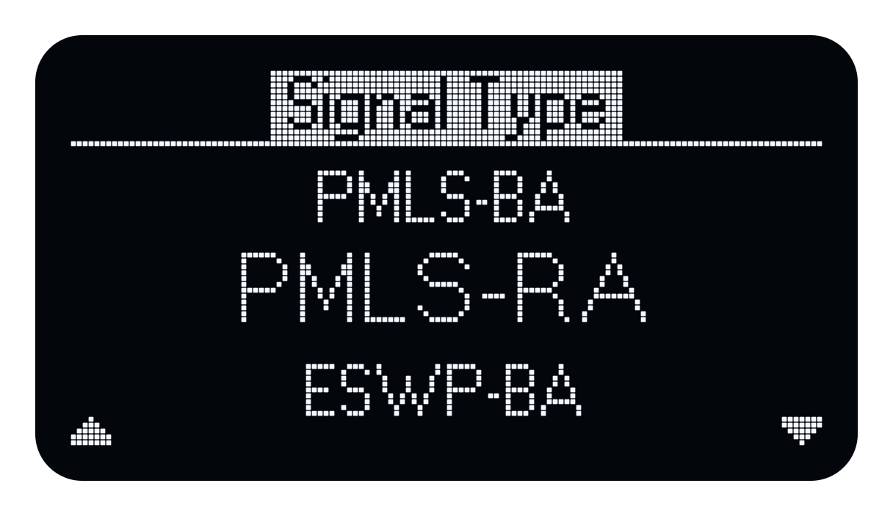
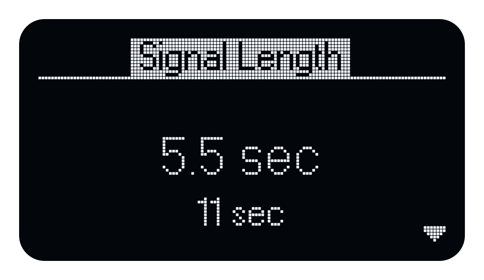
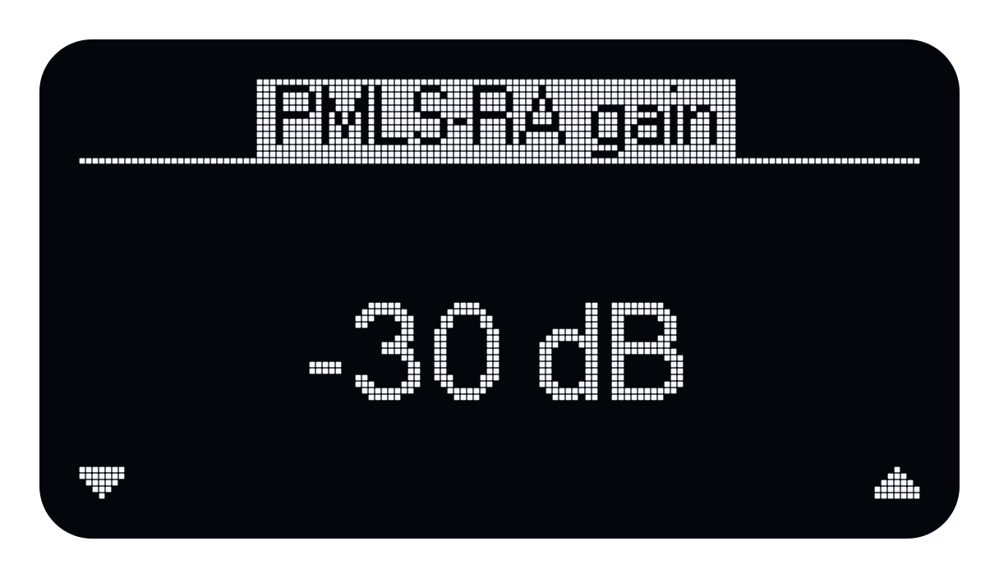
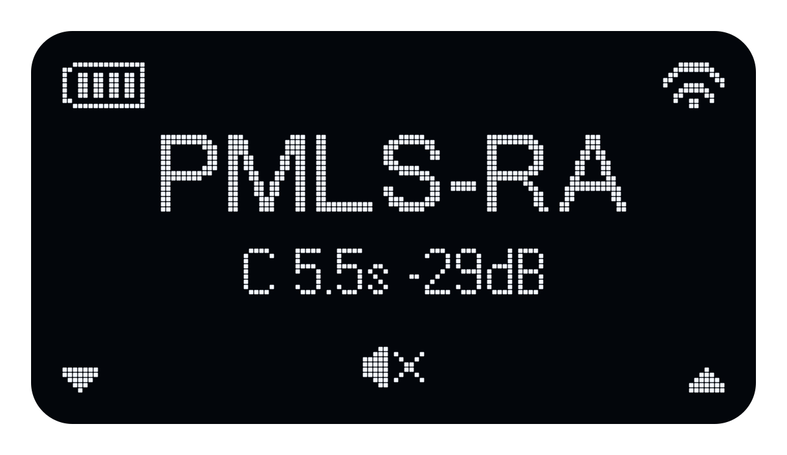

Quick Start
On this page
Positioning Atlas
Place Atlas on its three rubber feet on a stable surface, or secure it to a compatible tripod using the 1/4-inch UNC threaded mounting hole on the bottom. The bottom view identifies the mount, USB-C power connector and BNC connectors. The top view identifies the handle, Wi-Fi antenna cover and control panel.
Basic operation
Atlas is operated using three buttons:
| Button | Function |
|---|---|
| Left | Signal selection on the home page; decrease gain during playback |
| Middle | Menu on the home page; stop playback and return home during playback |
| Right | Start playback on the home page; increase gain during playback |
Turn on Atlas by pressing the Middle button.
Turn the Atlas off (from the home page) by pressing the Middle button 3 times in succession.
Starting playback
- Press L
-
Select a Signal Type. Press L (up arrow) or R (down arrow) to scroll through the list. The current choice appears in larger text. Press M to select it.

-
If the selected signal offers a Signal Mode, use L and R to choose Continuous or Intermittent, then press M to confirm. Continuous repeats the signal; Intermittent alternates playback and silence.

-
If prompted for Signal Length, use L and R to choose a length, then press M to confirm. The available lengths depend on the signal and mode.

-
Set the signal gain. Press L (down arrow) to decrease the gain or R (up arrow) to increase it, then press M to confirm.

-
Press R to start playback. During playback, press L (down arrow) to decrease the gain or R (up arrow) to increase it. The crossed speaker above the middle button indicates the stop control.

- Press M to stop playback and return to the initial home page.
For User, choose a stored signal before setting gain. BNC input uses its external audio source. User and BNC input skip the sequence-mode and length steps. Signals with only one valid mode or length also skip the corresponding choice.
For signal descriptions, available modes, durations and levels, see Signal Setup.
For a functional loudspeaker check, see Self-test. For discovery, authentication and app controls, use the DIRAC Field guide.